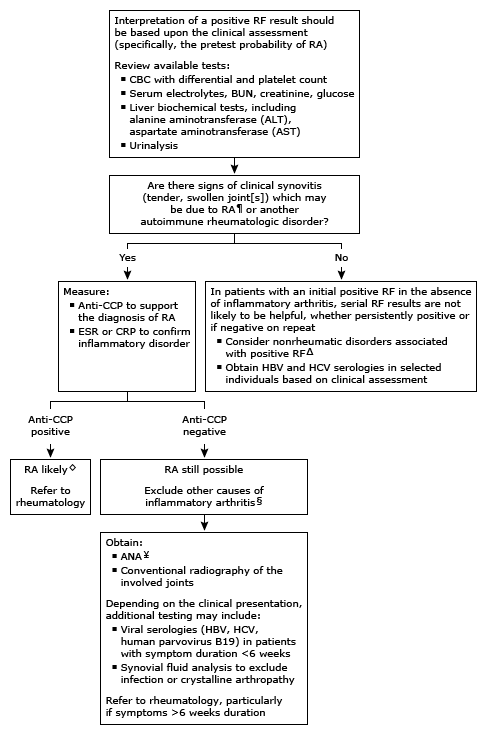

Initial evaluation of positive rheumatoid factor in adults*

This algorithm is intended for use with additional UpToDate content on clinical use of rheumatoid factors.
RF: rheumatoid factor; RA: rheumatoid arthritis; CBC: complete blood count; BUN: blood urea nitrogen; CCP: cyclic citrullinated peptide; ESR: erythrocyte sedimentation rate; CRP: C-reactive protein; HBV: hepatitis B virus; HCV: hepatitis C virus; ANA: antinuclear antibody; ULN: upper limit of normal; PIP: proximal interphalangeal; MCP: metacarpophalangeal; MTP: metatarsophalangeal; SLE: systemic lupus erythematosus. * RF results are reported as either negative or positive along with a titer. Low titers refer to positive values that are ≤3 times the ULN for the laboratory and assay. High titers refer to values >3 times the ULN. The diagnostic threshold for RF depends on the commercial kit. Interpretation of a specific abnormal result should be based upon the reference range reported with that result. ¶ Symptomatic, symmetric inflammatory arthritis of small joints (PIPs, MCPs, MTPs) for ≥6 weeks. Δ Nonrheumatic disorders associated with positive RF includes:
Chronic infections – subacute bacterial endocarditis, hepatitis B or C, syphilis, other viral infections
Refer to UpToDate table on major nonrheumatic diseases associated with RF positivity. ◊ Diagnostic features of RA include:
Inflammatory arthritis involving 3 or more joints
Positive RF and/or anti-CCP antibodies
Elevated levels of CRP or ESR
Diseases with similar features excluded (eg, psoriatic arthritis, acute viral polyarthritis, polyarticular gout or calcium pyrophosphate deposition disease, SLE)
Duration of symptoms at least 6 weeks
Radiographic erosions
Rheumatoid nodules
§ Consider:
Psoriatic arthritis
Acute viral polyarthritis
Polyarticular gout or calcium pyrophosphate deposition disease
SLE
Refer to UpToDate table on differential diagnosis of RA. ¥ The ANA may be positive in up to one-third of patients with RA.
A positive ANA may support the diagnosis of other autoimmune rheumatologic disorders, most commonly SLE
A negative ANA helps exclude SLE and other systemic rheumatologic disorders